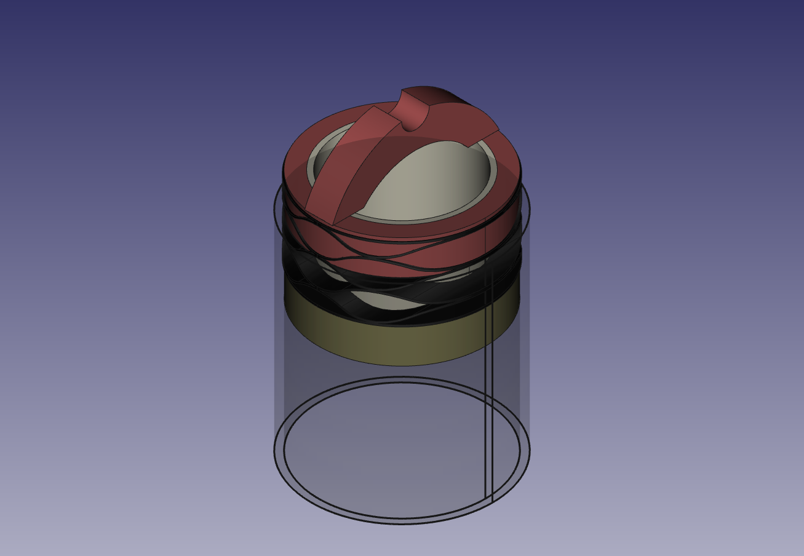
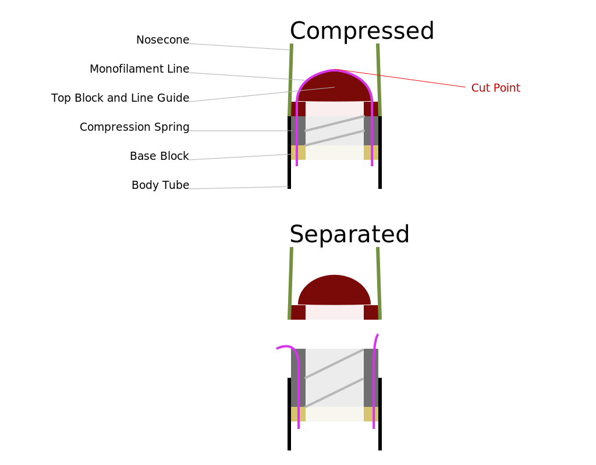

I was hoping to not use black powder charges that blow the rocket in half.
I know pyro recovery is light and simple, and generally pretty reliable. But it can be hard to test and I want to do something different. This might be a terrible idea.
Storing Energy
Fundamentally you need to store some energy to later use to separate the rocket. There aren’t too many options here, a gas generator (explosive), compressed air (like CO₂), and springs (rubber or metal). I figured I would look at metal springs since they can have very long lifetimes and be reasonably consistent. The goal isn’t to have the exact same ejection force every single time, but to have at least be above some threshold.
While thinking about this and looking around the internet I found this neat compact compression spring on McMaster Carr.
So I drew up a quick idea of a pair of blocks that would seat against the spring. One in the Nose (red) and one in the body tube. There is an inner tube for alignment (taking up side loads) and to keep things from tangling in the spring.

A quick FreeCAD drawing.
Release
At the very top there is an arch where a piece of monofilament line comes across the mechanism. This is tied to the base under load. The idea is you would compress the nose and body together and secure the line (somehow…). This would hold the rocket together in flight. At the tip of the device nichrome wire is wrapped around the monofilament line so that when heated the line breaks and releases the nose (at considerable force!) pulling out the parachute with it.

TODO: Design Issues
- The listed dimension of the spring isn’t quite the right outer diameter.
- How will the line be secured? There isn’t enough clearance to tie knots.
- How will the device be pressed together? It’s too hard to do by hand.
- How to “safe” the device against accidental firing? A pin?
- How to keep the chute from getting caught in the exposed spring?
- How strong/stiff does the monofilament line need to be?
- What are the side loads going to be? Is a kraft tube enough to take them up?
- How fast can we burn though the wire?